Free
$0 forever
Menu bar controls, essential annotation overlays, and the non-paying experience whenever you need it.
ScreenMark is your menu bar companion for live annotation, zoom, whiteboard, freeze frame, and recording — all without leaving your flow.
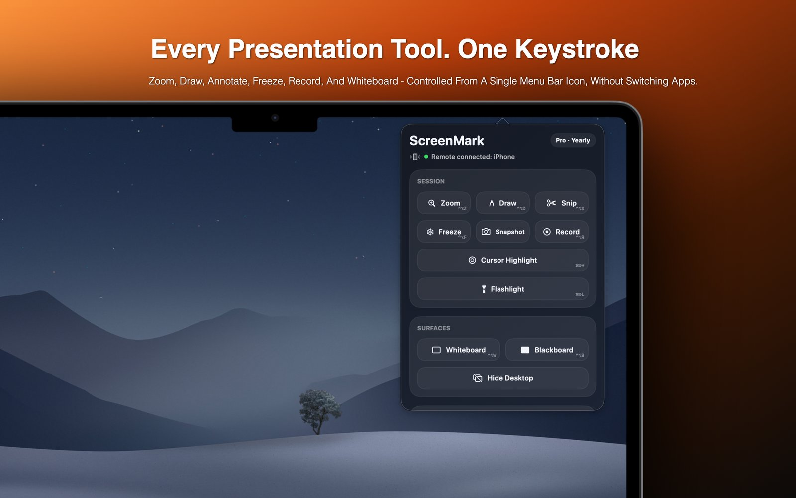
From a quick annotation to a full recording session — ScreenMark keeps it all one click away.
Magnify any area of your screen in real time. Classic zoom or interactive live lens — keep viewers focused without resizing anything. Pro
Pen, arrows, shapes, text, eraser, highlighter, blur, and spotlight — with S/M/L/XL stroke sizes. In-place text editing with drag-to-move.
Pause the display on any moment. Annotate the frozen frame or drag-to-snip a region and save it to clipboard or disk.
Cover your screen with a blank whiteboard or blackboard and sketch freely. Ideal for teachers, workshop facilitators, and live demos.
Set a countdown with a beautiful 3-ring Hours/Minutes/Seconds display. Customisable background presets, system clock overlay, and audio alerts.
Capture your session to MP4 with system audio + microphone mixed in real time. All annotations baked in. Pro
Dim everything except a soft circle around your cursor — focus the audience's gaze instantly. Adjustable radius and edge softness. Pro
Spotlight your pointer with a colored ring in circle, squircle, or rhombus shape. Hides when idle to keep things clean. Pro
Scroll through the gallery to explore the annotation overlay, whiteboard, zoom, and recording tools.
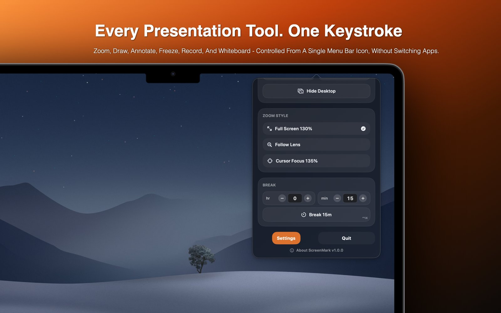
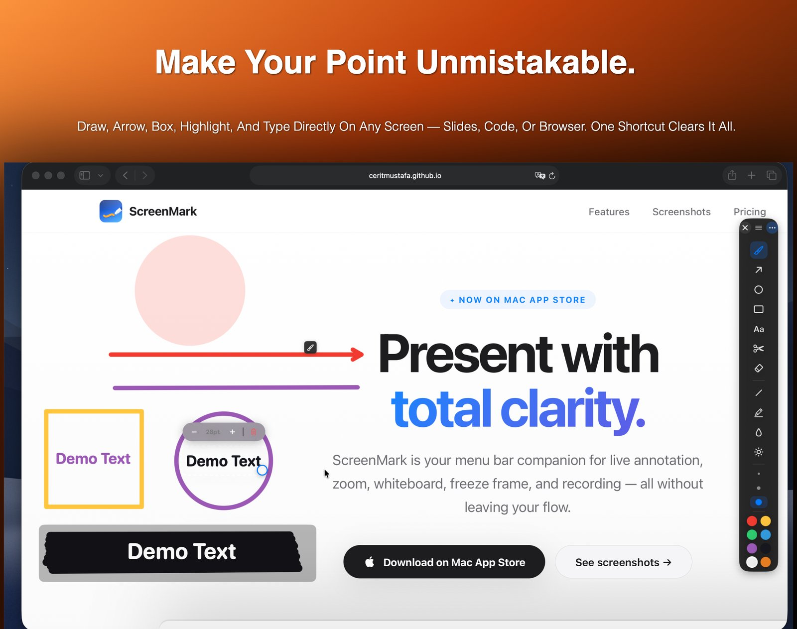
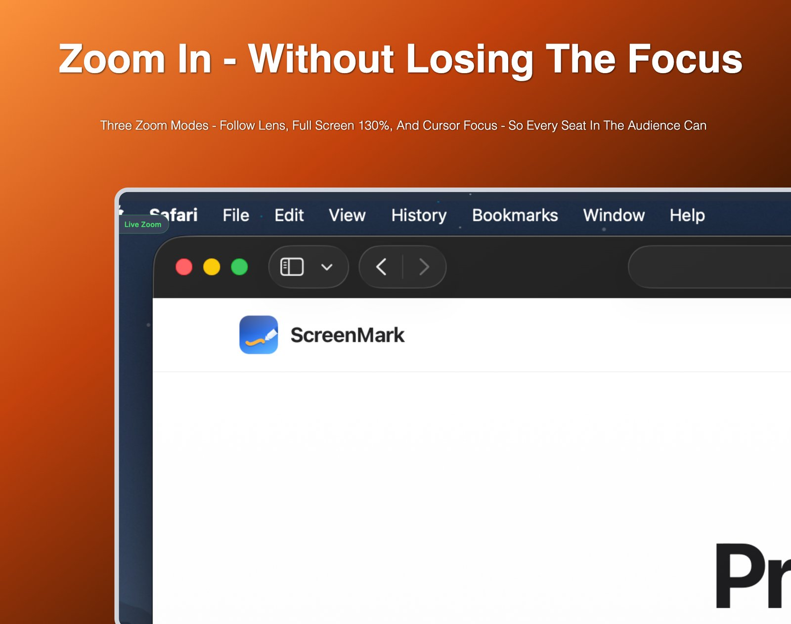
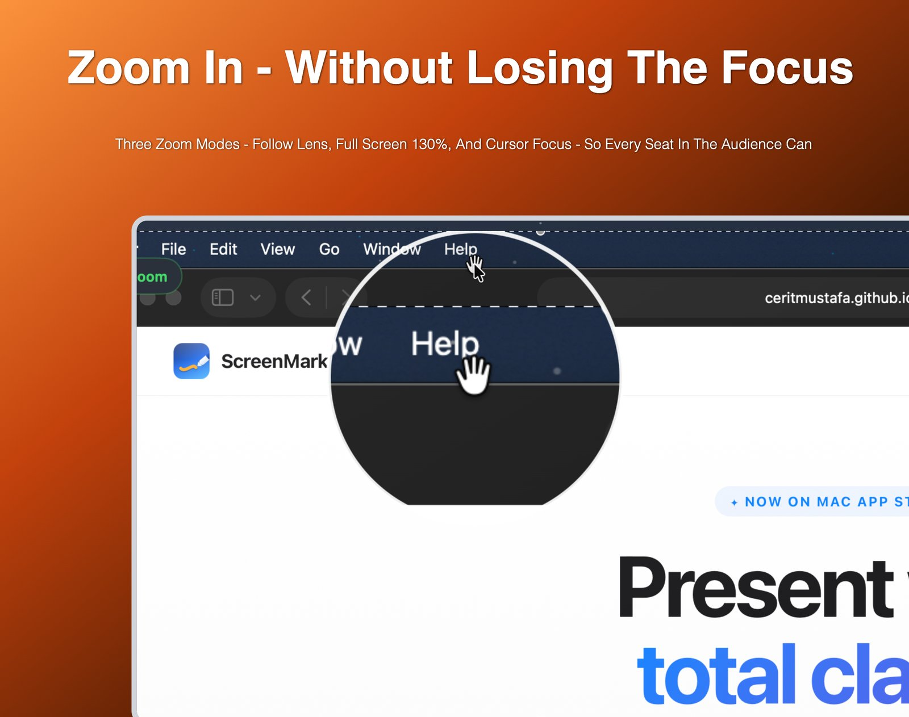
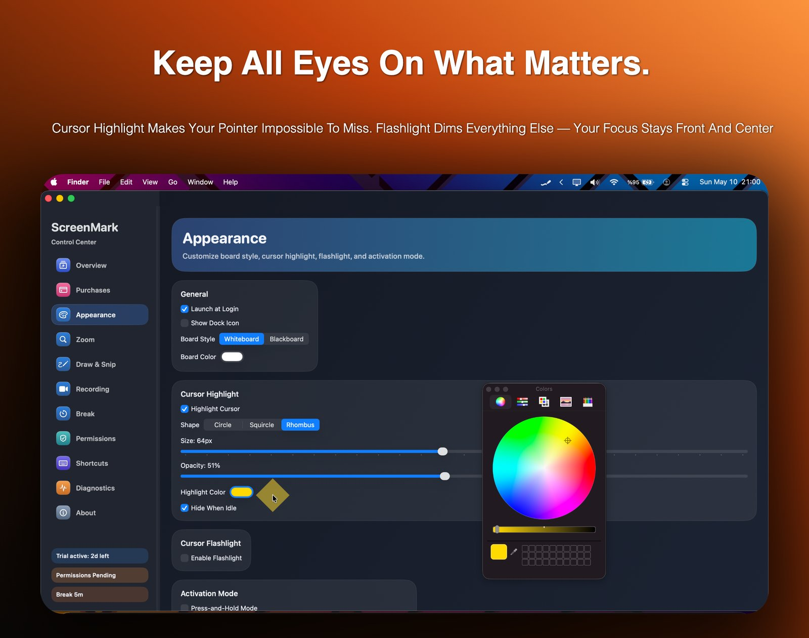
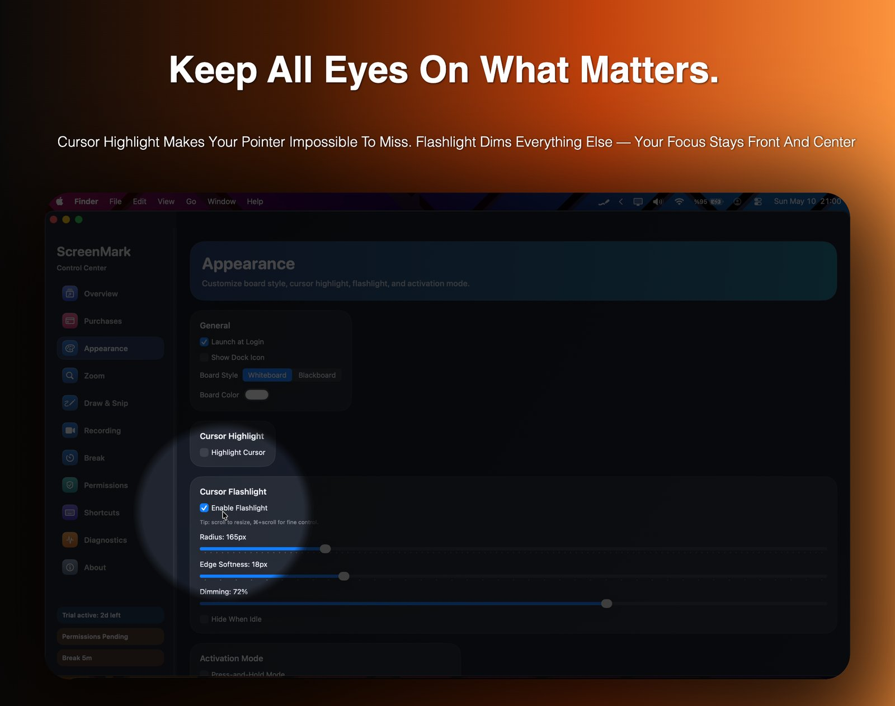
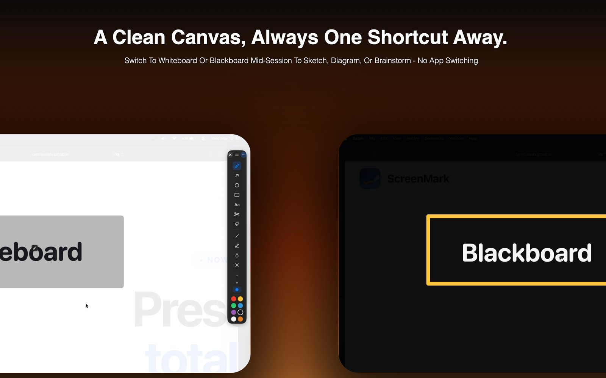
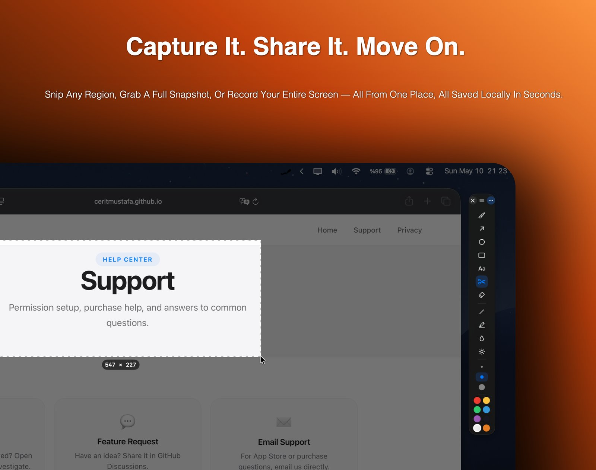
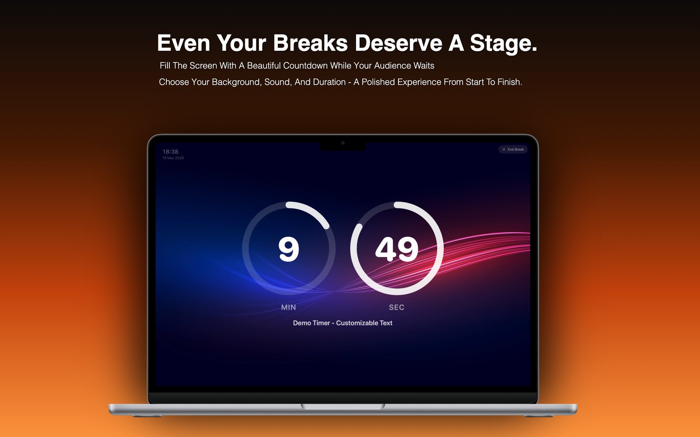
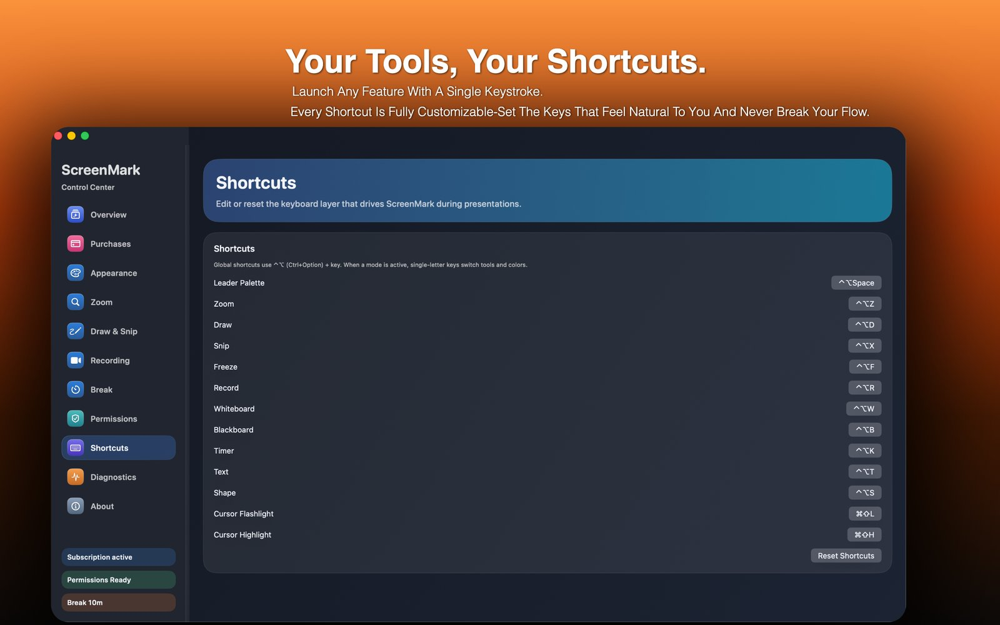
Pen, highlighter, arrows, shapes, blur, spotlight, eraser, and in-place text — all accessible in one click. Drag text labels to reposition them. S/M/L/XL stroke sizes.
Annotations render at full Retina resolution — crystal-clear on any display including Pro Display XDR.
Cursor Flashlight dims everything except a soft circle around your cursor — instantly focusing your audience on the right spot. Adjustable radius, edge softness, and dimming level.
Cursor Highlight adds a colored ring around your pointer in circle, squircle, or rhombus shape — so no one ever loses track of where you are.
Launch a full-screen timer with a 3-ring Hours / Minutes / Seconds display. Each ring counts down independently so the audience can see exactly how long is left at a glance.
Choose from aurora, dunes, ocean, forest, and night sky backgrounds. System clock shown top-left for at-a-glance awareness.
Record your screen to MP4 with system audio and microphone mixed together in real time. All annotations are baked into the video so nothing gets lost.
Snip a region and save it to clipboard or disk with a single drag. Annotated snapshots export at full Retina quality.
Pair your iPhone with ScreenMark on your Mac and drive your presentation without touching the keyboard. Trigger highlight, flashlight, drawing, and move the cursor — all from the palm of your hand.
Connects automatically over your local network — no account, no cables. Just open the app near your Mac and confirm a 4-digit code the first time.
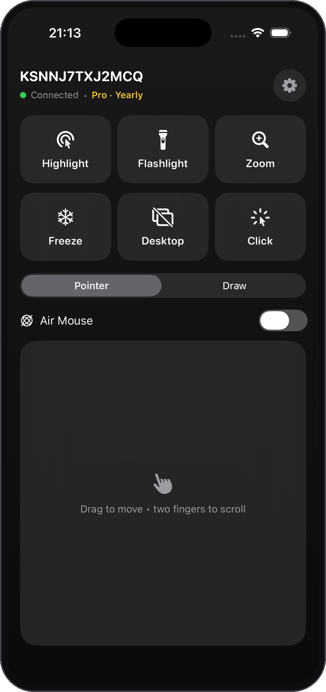
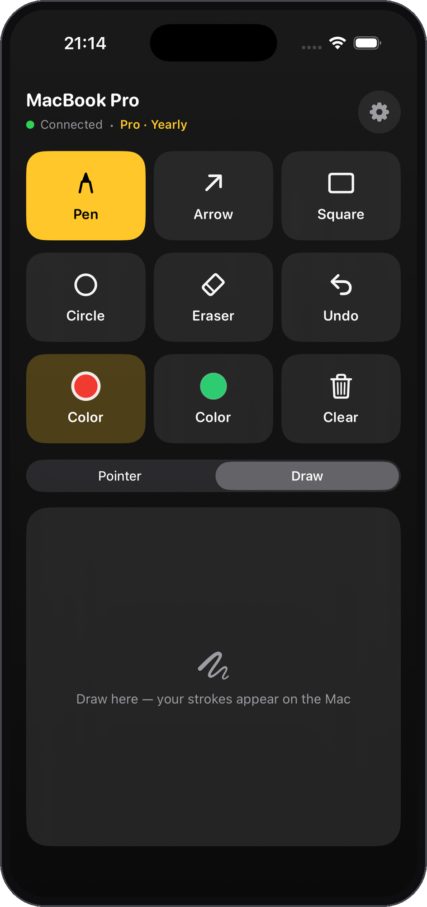
Download for free and upgrade only when you need the advanced tools.
$0 forever
Menu bar controls, essential annotation overlays, and the non-paying experience whenever you need it.
$29.99 one-time
Every Pro feature, forever. A one-time App Store purchase — no subscription, no account, no renewals.
$19.99 / year
$4.99 / month
Yearly saves 66% versus monthly. Eligible new subscribers can start either plan with a 7-day introductory App Store trial.
App Store subscription availability, introductory offer eligibility, pricing tiers, and local currency conversions are managed by Apple.
Screen Recording powers zoom, freeze, snip, and recording. Microphone access is used only when you choose to record mic audio.
No account required. Nothing you draw or capture is uploaded to a ScreenMark server. Purchases are handled entirely by the App Store.
Permission guidance, restore-purchase steps, and contact details are on the support page.
ScreenMark is free to download on the Mac App Store. No account, no subscription required to get started.
Download on Mac App Store